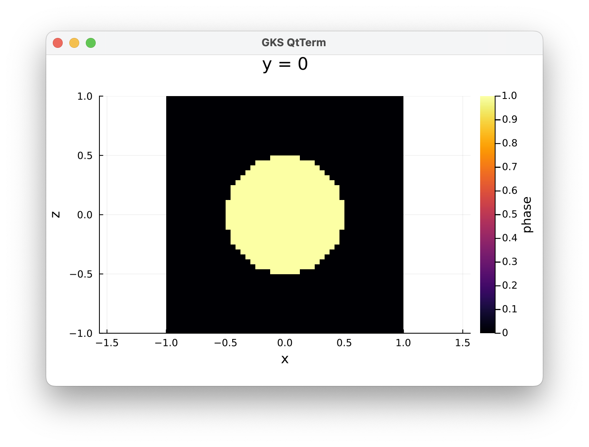
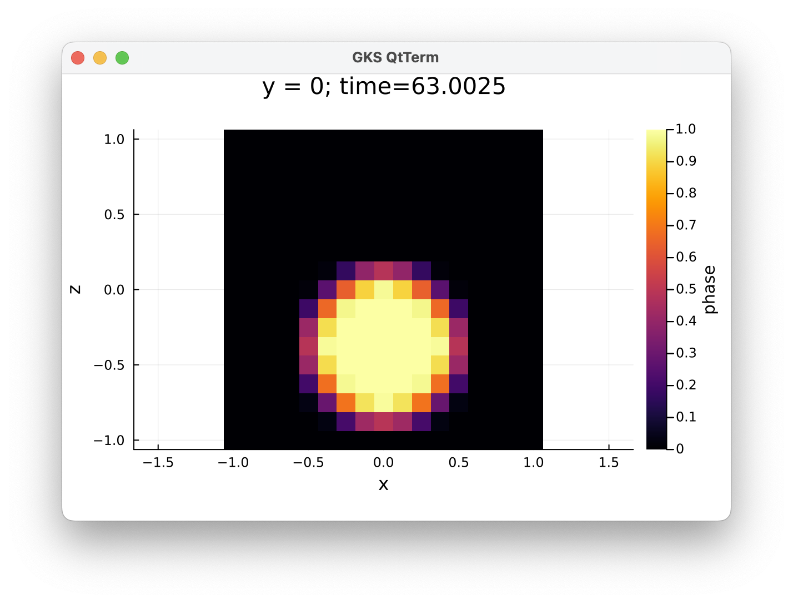

1. Example 1: Falling sphere
This is a first example that illustrates how to build a setup using the LaMEM.jl package, run it and visualize the results, all without leaving julia.
We start with loading the packages we need:
julia> using LaMEM, GeophysicalModelGenerator, PlotsThe GeophysicalModelGenerator package can be used to generate model setups and Plots for plotting.
1.1 Define model setup
Next, we define a general model setup, in which we specify the units with which we work (for most cases, you'll want to use the default GEO units), the size of the computational box and various timestepping parameters. In this case, we use a multigrid solver.
julia> model = Model(Grid(nel=(16,16,16), x=[-1,1], y=[-1,1], z=[-1,1]),
Time(nstep_max=20, dt_min=1e-3, dt=1, dt_max=10, time_end=100),
Solver(SolverType="multigrid", MGLevels=2),
Output(out_dir="example_1"))
LaMEM Model setup
|
|-- Scaling : GeoParams.Units.GeoUnits{GEO}
|-- Grid : nel=(16, 16, 16); xϵ(-1.0, 1.0), yϵ(-1.0, 1.0), zϵ(-1.0, 1.0)
|-- Time : nstep_max=20; nstep_out=1; time_end=100.0; dt=1.0
|-- Boundary conditions : noslip=[0, 0, 0, 0, 0, 0]
|-- Solution parameters : eta_min=1.0e18; eta_max=1.0e25; eta_ref=1.0e20; act_temp_diff=0
|-- Solver options : multigrid solver; coarse grid solver=direct; 2 levels
|-- Model setup options : Type=files;
|-- Output options : filename=output; pvd=1; avd=0; surf=0
|-- Materials : 0 phases; Note that each of the fields within Model has many additional and adjustable parameters. You can view that by typing:
julia> model.Time
LaMEM Timestepping parameters:
time_end = 100.0
dt = 1.0
dt_min = 0.001
dt_max = 10.0
dt_out = 0.2
inc_dt = 0.1
CFL = 0.5
CFLMAX = 0.8
nstep_max = 20
nstep_out = 1
nstep_rdb = 100
nstep_ini = 1
time_tol = 1.0e-8 1.2 Specify material properties
Once this is specified, we need to set material properties for each of the Phases we will consider in the simulation. This can be done with the Phase structure. First, we define two phases
julia> rm_phase!(model)
julia> matrix = Phase(ID=0,Name="matrix",eta=1e20,rho=3000)
Phase 0 (matrix):
rho = 3000.0
eta = 1.0e20
julia> sphere = Phase(ID=1,Name="sphere",eta=1e23,rho=3200)
Phase 1 (sphere):
rho = 3200.0
eta = 1.0e23 and add them to the model with:
julia> add_phase!(model, sphere, matrix)1.3 Set initial model geometry
We also need to specify an initial model geometry. The julia package GeophysicalModelGenerator has a number of functions for that, which can be used here. For the current setup, we just add a sphere:
julia> add_sphere!(model,cen=(0.0,0.0,0.0), radius=(0.5, ))It is often useful to plot the initial model setup. You can do this with the heatmap function from the Plots.jl package, for which we provide a LaMEM plugin that allows you to specify a cross-section through a 3D LaMEM setup:
julia> plot_cross_section(model, field=:phase, y=0)
In the initial setup we define two fields: :phase which defines the rocktypes and :temperature which has the initial temperature. They are stored as 3D arrays in model.Grid.Phases and model.Grid.Temp:
julia> model.Grid
LaMEM grid with constant Δ:
nel : ([16], [16], [16])
marker/cell : (3, 3, 3)
x ϵ [-1.0 : 1.0]
y ϵ [-1.0 : 1.0]
z ϵ [-1.0 : 1.0]
Phases : range ϵ [0 - 1]
Temp : range ϵ [0.0 - 0.0]1.4 Run LaMEM
At this stage we are ready to run a LaMEM simulation which can simply be done with the run_lamem command. By default, it will run on one processor. If you want to run this in parallel, you can specify the number of cores you want to use. Please note that running things in parallel is only worth the effort for large resolutions; for smaller setups it will be faster on one processor:
julia> run_lamem(model,1)
Saved file: Model3D.vts
Writing LaMEM marker file -> ./markers/mdb.00000000.dat
--------------------------------------------------------------------------
Lithosphere and Mantle Evolution Model
Compiled: Date: Apr 7 2023 - Time: 22:11:23
Version : 1.2.4
--------------------------------------------------------------------------
STAGGERED-GRID FINITE DIFFERENCE CANONICAL IMPLEMENTATION
--------------------------------------------------------------------------
Parsing input file : output.dat
Finished parsing input file : output.dat
--------------------------------------------------------------------------
Scaling parameters:
Temperature : 1000. [C/K]
Length : 1e+06 [m]
Viscosity : 1e+20 [Pa*s]
Stress : 10. [Pa]
--------------------------------------------------------------------------
Time stepping parameters:
Simulation end time : 100. [Myr]
Maximum number of steps : 20
Time step : 1. [Myr]
Minimum time step : 0.001 [Myr]
Maximum time step : 10. [Myr]
Time step increase factor : 0.1
CFL criterion : 0.5
CFLMAX (fixed time steps) : 0.8
Output every [n] steps : 1
Output [n] initial steps : 1
--------------------------------------------------------------------------
--------------------------------------------------------------------------1.5 Visualize results
Once the simulation is done, you can look at the results using the same heatmap function, but by specifying a timestep, which will read that timestep and plot a cross-section though it:
julia> plot_cross_section(model, y=0, timestep=20, field=:phase) 
Alternatively, you can visualize the results with Paraview. Change to the directory where you did the simulation:
julia> cd(model.Output.out_dir)
julia> julia> readdir()
25-element Vector{String}:
"Model3D.vts"
"Timestep_00000000_0.00000000e+00"
"Timestep_00000001_1.10000000e+00"
"Timestep_00000002_2.31000000e+00"
"Timestep_00000003_3.64100000e+00"
"Timestep_00000004_5.10510000e+00"
"Timestep_00000005_6.71561000e+00"
⋮
"Timestep_00000017_4.45991731e+01"
"Timestep_00000018_5.01590904e+01"
"Timestep_00000019_5.62749995e+01"
"Timestep_00000020_6.30024994e+01"
"markers"
"output.dat"
"output.pvd"And you can open output.pvd with paraview. If your system recognizes that *.pvd files should be opened with paraview, you can do that with
julia> ;
shell> open output.pvdOtherwise, start paraview manually and open the file.